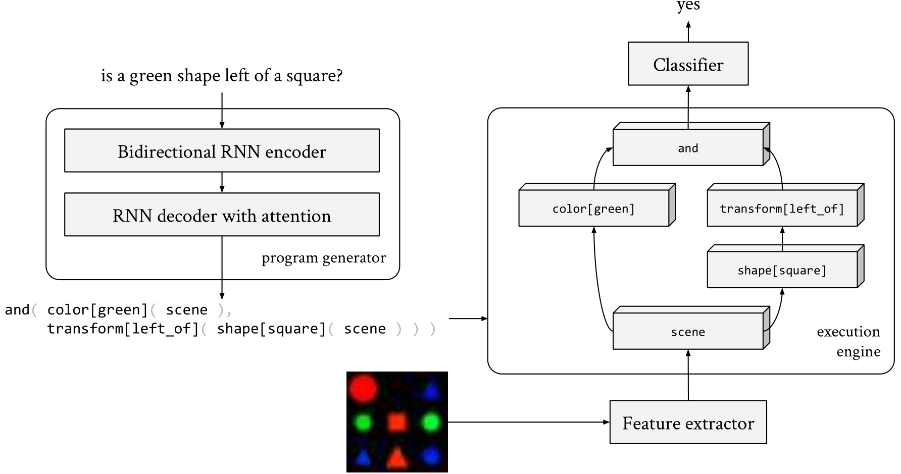

Abstract
Although neural module networks have an architectural bias towards compositionality, they require gold standard layouts to generalize systematically in practice. When instead learning layouts and modules jointly, compositionality does not arise automatically and an explicit pressure is necessary for the emergence of layouts exhibiting the right structure. We propose to address this problem using iterated learning, a cognitive science theory of the emergence of compositional languages in nature that has primarily been applied to simple referential games in machine learning. Considering the layouts of module networks as samples from an emergent language, we use iterated learning to encourage the development of structure within this language. We show that the resulting layouts support systematic generalization in neural agents solving the more complex task of visual question-answering. Our regularized iterated learning method can outperform baselines without iterated learning on SHAPES-SyGeT (SHAPES Systematic Generalization Test), a new split of the SHAPES dataset we introduce to evaluate systematic generalization, and on CLOSURE, an extension of CLEVR also designed to test systematic generalization. We demonstrate superior performance in recovering ground-truth compositional program structure with limited supervision on both SHAPES-SyGeT and CLEVR.
Method
